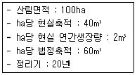

산림산업기사 (2018-08-19 기출문제)
1과목: 조림학
1. 어린나무 가꾸기 작업 시기에 대한 설명으로 옳은 것은?
- 식재 후 바로 실시한다.
- 주로 겨울철에 작업한다.
- 수관경쟁이 시작될 때 실시한다.
- 솎아베기 작업 후 1년 이내에 실시한다.
(정답률: 73%)

2. 가지치기에 대한 설명으로 옳은 것은?
- 수액 유동이 원활한 계절에 실시한다.
- 포플러류는 으뜸가지 이하의 가지만 제거한다.
- 가지의 절단면에 빗물이 고이면 유함이 빨라진다.
- 단풍나무 및 느릅나무는 생가지치기를 하여도 부후의 위험성이 없다.
(정답률: 74%)
3. 종자의 품질에 대한 설명으로 옳지 않은 것은?
- 순량율은 순정종자의 비율을 의미한다.
- 발아율은 일정 기간 내에 발아된 종자의 비율을 의미한다.
- 발아세는 단기간 내 일시에 발아된 종자의 비율을 의미한다.
- 효율은 발아율과 발아세를 곱하여 표시한 것으로 종자의 품질을 의미한다.
(정답률: 73%)
4. 갱신이 어떤 기간 안에 이루어져야 한다는 제한이 없고 성숙한 임목을 선택적으로 벌채하는 작업종은?
- 택벌작업
- 개벌작업
- 모수작업
- 산벌작업
(정답률: 84%)
5. Hawley 간벌 방법 중 주로 준우세목이 벌채되며 우량목에 지장을 주는 중간목과 우세목도 일부 벌채하는 간벌 방법은?
- 하층간벌
- 수관간벌
- 도태간벌
- 택벌식 간벌
(정답률: 50%)
6. 수목이 이용하는 필수원소 중 미량원소에 해당하는 것은?
- 철
- 황
- 칼슘
- 마그네슘
(정답률: 76%)
7. 모수작업으로 천연갱신이 가장 어려운 수종은?
- 곰솔
- 소나무
- 자작나무
- 서어나무
(정답률: 67%)
8. 정삼각형 식재와 정방형 식재의 본수 관계로 옳은 것은?
- 정삼각형 식재가 정방형 식재보다 11.5% 적다.
- 정삼각형 식재가 정방형 식재보다 11.5% 많다.
- 정삼각형 식재가 정방형 식재보다 15.5% 적다.
- 정삼각형 식재가 정방형 식재보다 15.5% 많다.
(정답률: 69%)
9. 주로 입선법으로 종자를 정선하는 수종은?
- Picea jezoensis
- Larix kaempferi
- pinus densiflora
- Juglans mandshurica
(정답률: 62%)
10. 파종조림이 가장 용이한 수종으로만 나열한 것은?
- 잣나무, 박달나무
- 복자기, 단풍나무
- 소나무, 상수리나무
- 분비나무, 일본잎갈나무
(정답률: 77%)
11. 암수한그루로만 바르게 나열한 것은?
- 왕버들, 소철
- 은행나무, 버드나무
- 굴참나무, 오리나무
- 물푸레나무, 사시나무
(정답률: 53%)
12. 지하자엽 발아형에 속하는 수종은?
- 버드나무
- 단풍나무
- 아까시나무
- 물푸레나무
(정답률: 58%)
13. 벌구 위에 서 있는 임목 전부를 일시 벌채하는 용어에 해당하는 것은?
- 1벌
- 3벌
- 윤벌
- 초벌
(정답률: 66%)
14. 수목이 이용 가능한 수분으로, 토양입자와 물분자 간의 부착력에 의하여 토양에 남아 있는 수분은?
- 결합수
- 중력수
- 범람수
- 모세관수
(정답률: 84%)
15. 계절적으로 종자의 성숙시기가 가장 빠른 수종은?
- 오리나무
- 버드나무
- 호두나무
- 느티나무
(정답률: 59%)
16. 사람이 이용한 적이 없고 산불이나 병해충 등에 의한 큰 피해가 없는 산림은?
- 순림
- 원시림
- 천연림
- 인공림
(정답률: 81%)
17. 묘목 식재에 대한 설명으로 옳지 않은 것은?
- 겨울철에는 동해나 한해를 고려하여야 한다.
- 주로 봄에 식재하지만 가을에 식재하기도 한다.
- 용기묘는 온실에서 키운 후 곧바로 산지에 식재한다.
- 봄철 식재는 서리의 피해가 우려되지 않을 때 심는 것이 좋다.
(정답률: 84%)
18. 임지에 질소 성분을 증가시키기 위해 식재하는 비료목으로만 나열한 것은?
- 싸리, 오리나무
- 소나무, 잣나무
- 대나무, 삼나무
- 리기다소나무, 리기테다소나무
(정답률: 81%)
19. 양수 및 음수에 대한 설명으로 옳지 않은 것은?
- 양수는 음수보다 광보화점이 높다.
- 소나무는 양수이고 주목은 음수이다.
- 양수는 음수보다 낮은 광도에서 광합성 효율이 높다.
- 양수와 음수는 햇빛을 좋아하는 정도가 아니라 그늘에 견딜 수 있는 내음성의 정도에 따라 구분한다.
(정답률: 78%)
20. 뿌리를 건전하게 하고 에너지의 저장과 공급에 중요한 역할을 하는 원소는?
- 철
- 인산
- 질소
- 칼슘
(정답률: 58%)
2과목: 산림보호학
21. 같은 종의 곤충에 대하여 행동 및 생리에 영향을 주는 물질은?
- 알로몬
- 시노몬
- 페로몬
- 카이로몬
(정답률: 84%)
22. 수목에 발생하는 흰가루병의 표징에 대한 설명으로 옳은 것은?
- 병환부에 나타난 흰가루는 감로에 곰팡이가 자란 것이다.
- 병환부에 나타난 흰가루는 병원균의 완전세대이다.
- 병환부에 나타난 흰가루는 병원균의 분생포자이다.
- 봄철 병환부에 나타난 미세한 흑색의 알맹이는 불완전세대인 자낭구이다.
(정답률: 72%)
23. 밤나무혹벌에 대한 설명으로 옳지 않은 것은?
- 1년에 1회 발생한다.
- 밤의 결실을 방해하는 해충이다.
- 주요 천적으로 중국긴꼬리좀벌과 상수리좀벌 등이 있다.
- 성충은 초여름에 우화하여 교미 후 밤나무의 곁눈에 산란한다.
(정답률: 59%)
24. 곤충의 호흡이 이루어지는 기관은?
- 기문
- 인두
- 내분기계
- 말피기관
(정답률: 82%)
25. 나무껍질 사이에서 월동하는 해충은?
- 밤바구미
- 솔잎혹파리
- 어스렝이나방
- 잣나무넓적잎벌
(정답률: 53%)
26. 토양 속의 자유생활선충과 비교한 식물기생성 선충의 대표적인 형태적 특징은?
- 입의 유무
- 구침의 유무
- 몸체가 투명
- 뱀장어 모양
(정답률: 70%)
27. 솔나방에 대한 설명으로 옳지 않은 것은?
- 종실을 가해한다.
- 7~8월에 우화한다.
- 유충 상태로 월동한다.
- 알을 무더기로 낳는다.
(정답률: 63%)
28. 아황산가스로 인한 수목의 피해 증상 및 영향에 대한 설명으로 옳지 않은 것은?
- 대기의 습도가 낮은 경우에는 가스가 정체되어 피해가 현저하게 나타난다.
- 만성증상은 수목의 생육이 왕성한 늦봄과 초여름에 최고로 민감하게 나타난다.
- 급성증상은 잎의 주변부와 엽맥 사이에 조직의 괴사와 연반현상이 나타난다.
- 기공으로 흡수된 아황산가스의 대부분은 황산 또는 황산염으로 되어 접촉부위 부근에 축적된다.
(정답률: 64%)
29. 소나무재선충병에 대한 설명으로 옳지 않은 것은?
- 잣나무도 피해를 입을 수 있다.
- 현재는 솔수염하늘소에 의해서만 전반된다.
- 피해목은 벌채하여 메탐소듐 액제로 훈증한다.
- 우리나라는 1988년경 부산에서 최초로 감염목이 발견되었다.
(정답률: 74%)
30. 동해로 인한 피해가 가장 심한 곳은?
- 남사면이 아닌 곳
- 경사가 15°를 넘는 사면
- 사면을 따라 내려가 오복하게 들어간 곳
- 임내 공지가 주변에 있는 임복 수고의 1.5배 이하인 곳
(정답률: 70%)
31. 연작에 의해서 피해가 현저하게 증가하는 수목병은?
- 뿌리혹선충병
- 잣나무 털녹병
- 소나무 잎녹병
- 배나무 붉은별무늬병
(정답률: 63%)
32. 농약에 의한 수목의 약해에 대한 설명으로 옳지 않은 것은?
- 줄기 또는 잎이 변색된다.
- 피해가 심할 경우 고사한다.
- 태풍이 지나간 후 살포하면 약제를 받기 쉽다.
- 두 가지 이상의 살충제를 혼용하면 약해가 줄어든다.
(정답률: 75%)
33. 모잘록병에 대한 설명으로 옳지 않은 것은?
- 거의 모든 수종에 발병할 수 있다.
- 병원균은 난균류와 자낭균류가 있다.
- 묘상이 과습하지 않도록 배수와 통풍에 주의한다.
- 어린 묘목의 뿌리 또는 지제부가 주로 감염된다.
(정답률: 68%)
34. 수목병의 임업적 방제법에 대한 설명으로 옳지 않은 것은?
- 묘목은 건강하게 키워야 하면, 취급에도 주의해야 한다.
- 특정한 병의 발생이 예상될 경우에는 다른 수종을 심는다.
- 부후병 방지를 위해서 봄에서 초여름에 걸쳐 벌채하는 것이 좋다.
- 조림지와 유사한 환경조건을 가진 임지의 우량한 모수에서 채취한 종자를 심는다.
(정답률: 70%)
35. 대추나무 빗자루병 방제에 가장 효과적인 약제는?
- 보르도액
- 페니실린
- 석회 황합제
- 옥시테트라사이클린
(정답률: 84%)
36. 소나무좀 방제 방법으로 옳지 않은 것은?
- 페니트로티온 유제를 살포한다.
- 6월 이전에 임내의 잡초를 없앤다.
- 기생성 천적인 좀벌류, 기생파리류를 이용한다.
- 성충을 산란하게 한 후 먹이나무를 박피하여 소각한다.
(정답률: 55%)
37. 산림해충의 발생예찰 방법이 아닌 것은?
- 약제를 이용하는 방법
- 통게를 이용하는 방법
- 개체군 동태를 이용하는 방법
- 다른 생물 현상과의 관계를 이용하는 방법
(정답률: 67%)
38. 산불 관련 실효습도의 정의로 옳은 것은?
- 토양의 함수량
- 임분 내의 평균 습도
- 당일 대기 중 상대습도 3회의 평균치
- 당일을 포함한 최근 일의 상대습도에 가중치를 붙인 평균 습도
(정답률: 65%)
39. 매미나방에 대한 설명으로 옳지 않은 것은?
- 침엽수와 활엽수의 잎을 삭해한다.
- 암컷은 밤낮을 활발하게 날며 수컷을 찾는다.
- 연 1회 발생하며 나무줄기에서 알로 월동한다.
- 부화유충은 4~5일간 알덩어리 주위에 있다가 바람에 날려 분산한다.
(정답률: 66%)
40. 지표식물을 이용하여 발병 여부를 확인할 수 있는 병은?
- 낙엽송 잎떨림병
- 참나무 시들음병
- 밤나무 가지마름병
- 아까시나무 모자이크병
(정답률: 50%)
3과목: 임업경영학
41. 임업 이율에 해당하는 것은?
- 평정 이율
- 현실 이율
- 단기 이율
- 실직적 이율
(정답률: 65%)
42. 임업경영 분석자료 중 조수익이 4,500,000원, 경영비가 1,500,000원이면 소득률은?
- 약 33%
- 약 67%
- 약 150%
- 약 300%
(정답률: 56%)
43. 입목 재적 계산에 필요한 요소로만 나열된 것은?
- 수고, 형수, 단면적
- 수고, 형수, 원주율
- 직경, 형수, 단면적
- 직경, 단면적, 원주율
(정답률: 74%)
44. 임지의 특성에 대한 설명으로 옳지 않은 것은?
- 임지는 입업 이외의 용도로 변경될 수 있다.
- 임지의 경제적 가치는 교통의 편리 여부에 영향을 많이 받는다.
- 임지는 생육환경이 수직적으로 비슷하므로 생육하는 수종들도 단순하게 나타난다.
- 임지는 넓고 험하며 높은 지대에 위치하고 있어서 주로 조방적인 작업이 이루어진다.
(정답률: 65%)
45. 정액법을 이용한 임업 자산의 감가상각액 산출 방법은?
- 폐기가격 ÷ 내용연수
- 구입가격 ÷ 내용연수
- (폐기가격 - 구입가격) ÷ 내용연수
- (구입가격 - 폐기가격) ÷ 내용연수
(정답률: 78%)
46. 구분구적식으로 중앙단면적을 이용하여 벌채목의 재적을 계산하는 방법은?
- Huber식
- Hoppus식
- Newton식
- Pressler식
(정답률: 75%)
47. 지황조사 항목이 아닌 것은?
- 지위
- 지리
- 임종
- 경사도
(정답률: 68%)
48. 임업경영의 지도원칙으로 매년 목재수확을 균등하게 하여 영속적으로 목재를 공급하는 것은?
- 보속성의 원칙
- 공공성의 원칙
- 생산성의 원칙
- 합자연석의 원칙
(정답률: 81%)
49. 임업경영자산으로 유동자산이 아닌 것은?
- 현금
- 묘목
- 비료
- 임목
(정답률: 69%)
50. 산림조사에서 지종 구분에 해당되지 않는 것은?
- 제지
- 입목지
- 황폐지
- 무입목지
(정답률: 65%)
51. 별기미만 장령림의 임목평가에 주로 사용하는 방법은?
- 원가법
- 기망가법
- 비용가법
- 시장가역산법
(정답률: 59%)
52. 재적수확 최대의 벌기령을 채택하는 기준이 되는 생장량은?
- 총생장량
- 연년생장량
- 정기생장량
- 총평균생장량
(정답률: 61%)
53. 단목의 연령을 측정하는 방법에 대한 설명으로 옳은 것은?
- 목측으로도 나무의 크기에 관계없이 정확한 나무의 나이를 측정할 수 잇다.
- 기록에 의한 방법은 과거의 조림 기록에 의해 나무의 연령을 측정하는 것이다.
- 지절에 의한 방법은 가지의 모양에 관계없이 가지의 수를 세어 연령을 파악하는 것이다.
- 성장추를 이용하여 흉고부위에서 목편을 채취하고 연륜수를 파악하면 그것이 곧 그 나무의 연령이 된다.
(정답률: 66%)
54. 다음 조건에서 Kameraltaxe법에 의한 전체 연간표준벌채량은?

- 1m3
- 3m3
- 100m3
- 300m3
(정답률: 56%)
55. 20m×10m 크기의 표준지에서 매목조사를 통하여 측정된 임목 본수는 60본이었다. 이 경우 이 임분의 ha당 본수는 얼마로 추정되는가?
- 150
- 300
- 1,500
- 3,000
(정답률: 60%)
56. 임업원가 계산방법으로 개별원가계산에 대한 설명으로 옳지 않은 것은?
- 공정별 원가계산방법이라고도 한다.
- 주문에 의하여 제품을 생산하는 경우에 많이 사용한다.
- 제품의 원가를 개개의 제품단위별로 직접 계산하는 방법이다.
- 소비자에게 제품의 원가와 일정한 이익을 포함한 제품가격을 청구하는데 도움이 된다.
(정답률: 57%)
57. 임지기망가의 값이 작아지는 경우로 옳은 것은?
- 이율이 낮아질 때
- 벌기가 짧아질 때
- 조림비가 커질 때
- 간벌 수익이 커질 때
(정답률: 61%)
58. 임목자산의 구성 상태로서 질적지표를 나타내는 것은?
- 경영자가 보유하고 있는 전체 산림면적
- 경영자가 보유하고 있는 임목자산장비율
- 경영자가 보유하고 있는 임목자산 중에서 부채가 차지하는 비율
- 경영자가 보유하고 있는 임목자산 중에서 인공림의 임령 구성 상태
(정답률: 66%)
59. 지위 평가방법으로 옳지 않은 것은?
- 지표식물에 의한 방법
- 우세목의 연령에 의한 방법
- 준우세목의 수고에 의한 방법
- 토양인자를 종합하여 판단하는 방법
(정답률: 48%)
60. Glaser법을 이용한 산불피해지역의 피해액을 추정하려 할 때 필요한 인자가 아닌 것은?
- 주벌 수입
- 산불 발생년도 조림비
- 평가 대상 산림의 임령
- 벌기령(주벌 시의 임령)
(정답률: 63%)
4과목: 산림공학
61. 임도의 종단면도 설계도 작성에 대한 설명으로 옳지 않은 것은?
- 축적은 휨 1/1000, 종1/200으로 한다.
- 종단기울기의 변화점에는 종단곡선을 삽입한다.
- 시공계획고는 절토량과 성토량이 균형을 이루게 한다.
- 절토부분은 토사 및 암반으로 구분하되 임반부분은 추정선으로 기입한다.
(정답률: 54%)
62. 임도의 폭이 4m이고 횡단기울기가 3%일 때 임도 중앙점과 길어깨와의 높이차는?
- 3cm
- 4cm
- 6cm
- 9cm
(정답률: 64%)
63. 시멘트의 경화 촉진제로 쓰이는 것은?
- 석고
- 염화칼슘
- 탄산칼슘
- 탄산나트륨
(정답률: 67%)
64. 임도에 설치된 교량이 받는 활하중에 속하는 것은?
- 교량의 시설물
- 교량 바닥틀의 무게
- 교량을 지나는 트럭의 무게
- 교량 주트러스(main truss) 무게
(정답률: 73%)
65. 선떼붙이기에 대한 설명으로 옳지 않은 것은?
- 기울기는 1 : 0.2 ~ 0.3으로 한다.
- 경사가 급할수록 큰 급수를 적용한다.
- 지표수를 분산시켜 침식을 방지하기 위한 공법이다.
- 떼붙이기의 사용매수에 따라 1~9급으로 구분한다.
(정답률: 58%)
66. 생산재의 품등에 영향을 미치고, 규격이 맞는 경제성이 높은 목재를 생산하기 위하여 실시하는 것은?
- 조재목 검척
- 조재목 마름질
- 가지제거 작업
- 통나무 자르기
(정답률: 61%)
67. 산악지대 임도를 배치하는 방법으로 개설비용이 가장 적고 토사 유출이 적지만 상향집재만 가능한 것은?
- 능선임도
- 계곡임도
- 사면임도
- 산복임도
(정답률: 59%)
68. 컴퍼스 측량에 발생하는 오차가 아닌 것은?
- 치심오차
- 기계오차
- 관측오차
- 국소인력에 의한 오차
(정답률: 49%)
69. 임도의 세월시설에 대한 설명으로 옳은 것은?
- 계상기울기가 완만한 계류통과부에 설치한다.
- 하류부가 황폐계류인 경우에 설치하는 것이 효과적이다.
- 유로에 해당되는 부분은 사다리꼴의 단면으로 한다.
- 평상시는 관거 등을 통해 배수하고 홍수시는 월류할 수 있게 한다.
(정답률: 60%)
70. 중력댐의 안정조건이 아닌 것은?
- 전도에 대한 안정
- 활동에 대한 안정
- 대수면의 기울기에 대한 안정
- 기초지반의 지지력에 대한 안정
(정답률: 56%)
71. 철강제 틀 댐에 대한 설명으로 옳지 않은 것은?
- 설치작업 공사기간이 단축된다.
- 시공 자재의 운반 작업이 용이하다.
- 터파기를 줄일 수 있고 연약지반에 설치할 수 있다.
- 구조물의 연결부분을 편구조로 하여 탄력성이 낮아진다.
(정답률: 59%)
72. 1m깊이의 하천에서 수면으로부터 20cm 깊이의 유속은 1.10m/s, 60cm 깊이의 유속은 0.92m/s, 바닥의 유속은 0.64m/s이었다면, 종유속곡선이 포물선에 가까울 때 이 수로의 평균 유속(m/s)은?
- 0.64
- 0.89
- 0.92
- 1.10
(정답률: 54%)
73. 산지사방 공작물의 종류와 기능에 대한 설명으로 옳지 않은 것은?
- 누구막이는 누구로 인한 침식을 방지한다.
- 땅속흙막이는 비탈 다듬기로 생긴 토사의 활동을 방지한다.
- 산비탈흙막이는 산비탈의 경사를 완화하여 산비탈의 붕괴를 방지한다.
- 골막이는 속도량에 의하여 집수된 물을 지표에 도출하고 안전하게 배수한다.
(정답률: 57%)
74. 임도의 곡선부에서 곡률바경이 4m, 트럭의 길이가 2m, 트럭의 폭이 1m일 때 확폭량은?
- 0.1m
- 0.2m
- 0.5m
- 1.5m
(정답률: 55%)
75. 산지와 절개지에서 발생한 황폐지 복구 방법으로 옳지 않은 것은?
- 빗물을 분산시켜 일정한 장소에 모이거나 흐르게 한다.
- 도랑이나 작은 구곡 수로에는 떼로 수로와 누구막이를 만들어 침식을 막는다.
- 불규칙한 지반을 정리하고 녹화공법 위주로 식생을 조성하여 표토를 피복한다.
- 경사가 완만한 경유는 단을 끊고 가급적 파종상을 만들지 않아 표토의 이동이 없도록 한다.
(정답률: 67%)
76. 일반지형에서 임도의 설계속도가 20km/h인 경우 종단기울기 기준은?
- 7% 이하
- 9% 이하
- 12% 이하
- 14% 이하
(정답률: 59%)
77. 와이어로프의 안전계수를 바르게 나타낸 식은?
- 와이어로프의절단하중(kg)/와이어로프에걸리는최대장력(kg)
- 와이어로프의자체하중(kg)/와이어로프에걸리는최대장력(kg)
- 와이어로프에걸리는최대장력(kg)/와이어로프의절단하중(kg)
- 와이어로프에걸리는최대장력(kg)/와이어로프의자체하중(kg)
(정답률: 56%)
78. 빗물침식에 해당되지 않는 것은?
- 용출침식
- 구곡침식
- 면상침식
- 누구침식
(정답률: 74%)
79. 가선집재 작업이 수행 가능한 장비로 가장 효율적인 것은?
- 타워야더
- 하베스터
- 펠러번처
- 프로세서
(정답률: 65%)
80. 목재수확 작업에서 트랙터 사용 여부에 가장 큰 영향을 주는 것은?
- 사용 경비
- 작업지 경사
- 계절 및 온도
- 노동력 투입 가능 정도
(정답률: 81%)